Relive the previous edition: two days of youth leadership, dialogue, collaboration and practical conversations in Jalingo, Taraba State.
Held on 26–27 June 2026, the conference brought delegates together to discuss leadership, governance, accountability and social transformation, while building connections across communities.
A glimpse of the delegates, sessions, discussions, networking and people who made the edition memorable.
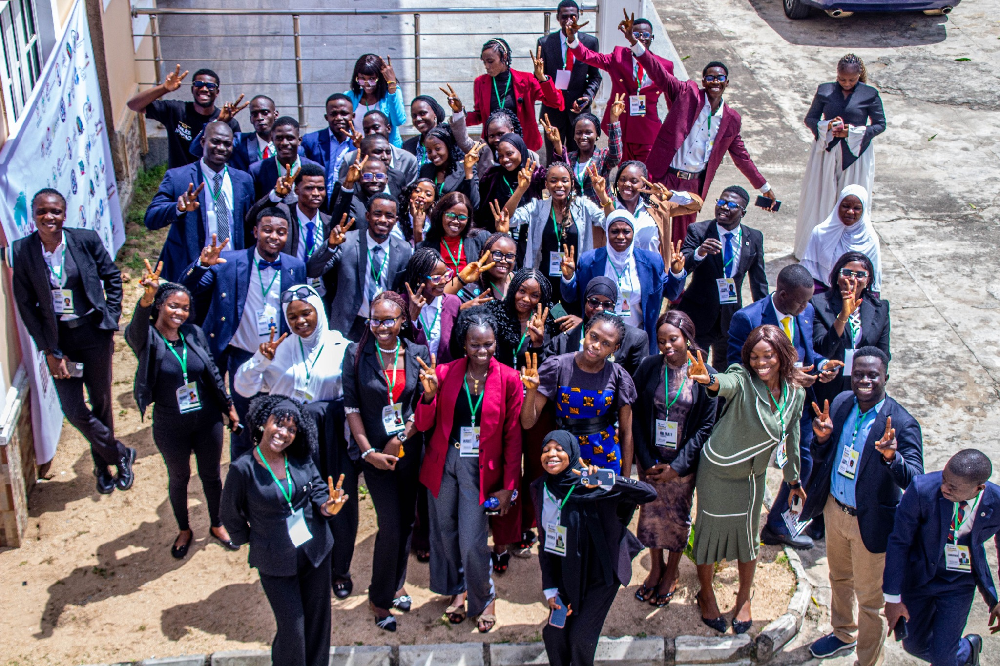
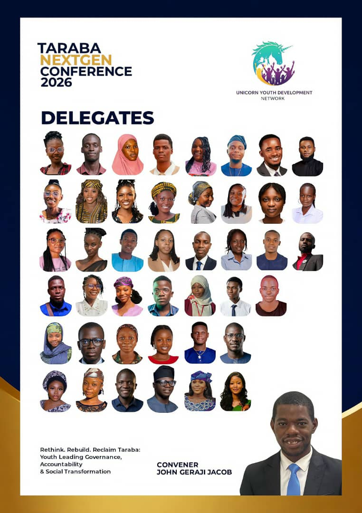
Meet the young people who came together for learning, exchange, leadership and collaboration.
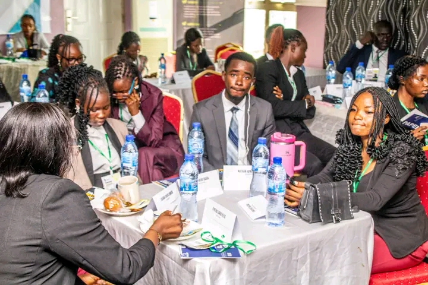
Panelists shared practical perspectives on leadership, governance, accountability and social transformation.
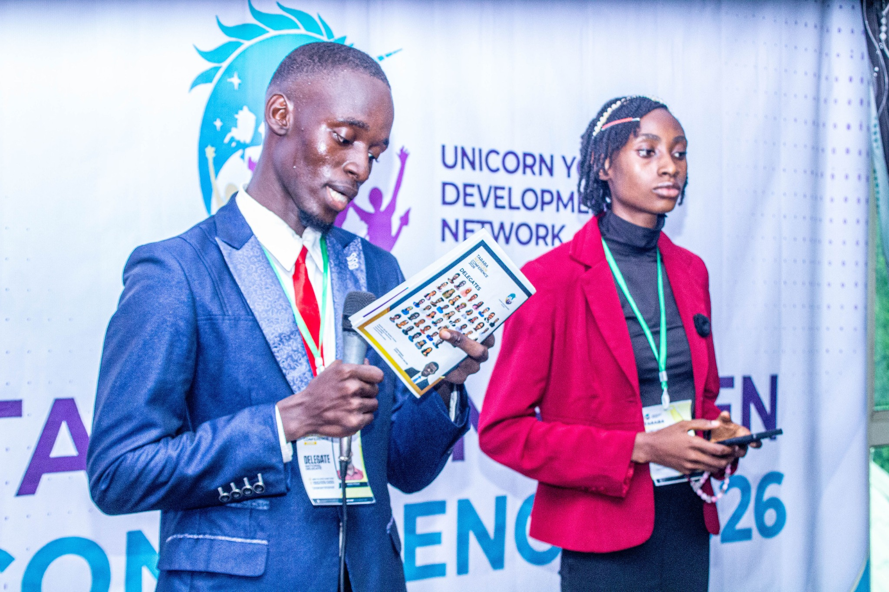
Delegates presented realities, experiences and priority issues from the communities and states they represented.
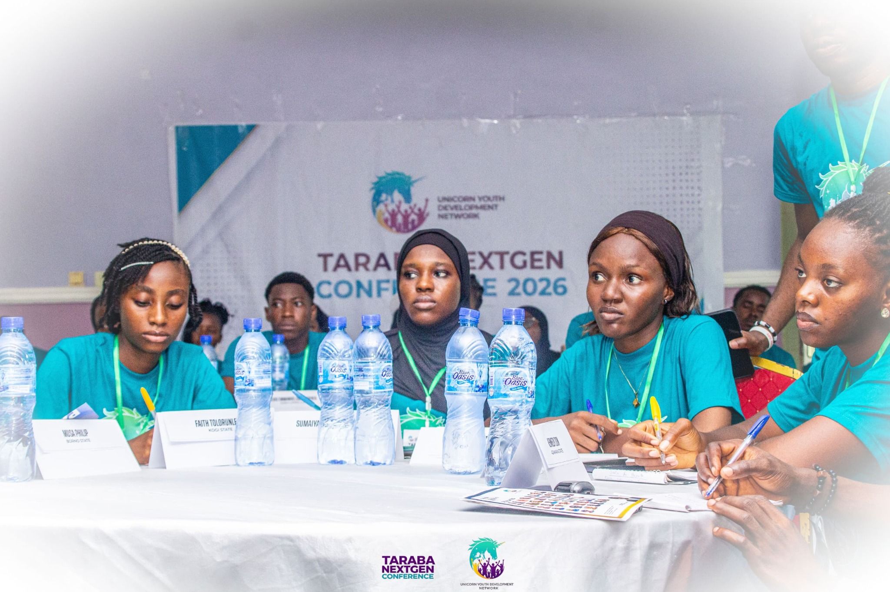
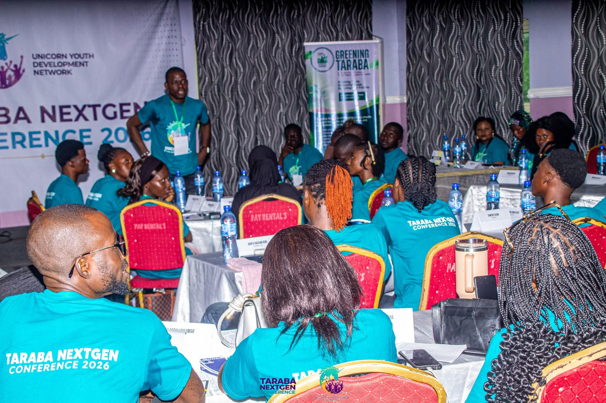
Small-group challenge tables created space to identify issues, exchange ideas and develop practical responses.

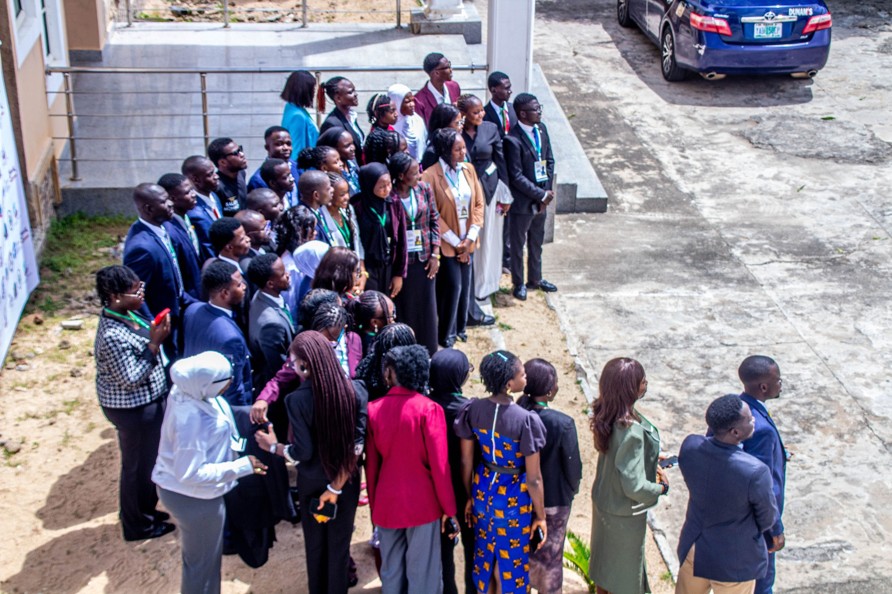
Connections, conversations and shared moments extended beyond the formal conference sessions.
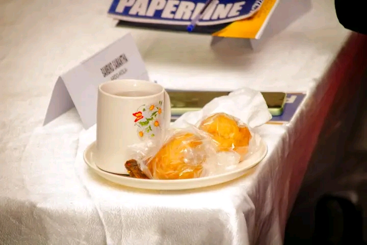
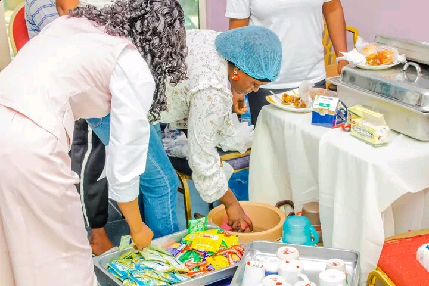
Meals and fellowship gave delegates additional opportunities to connect and interact throughout the programme.
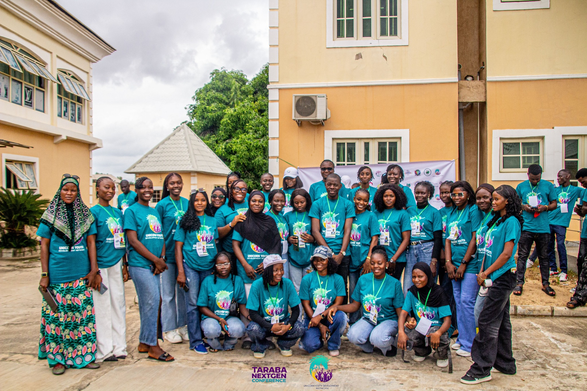
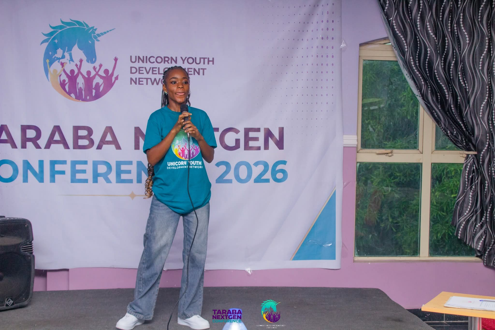
The people working behind the scenes helped create a welcoming and coordinated conference experience.
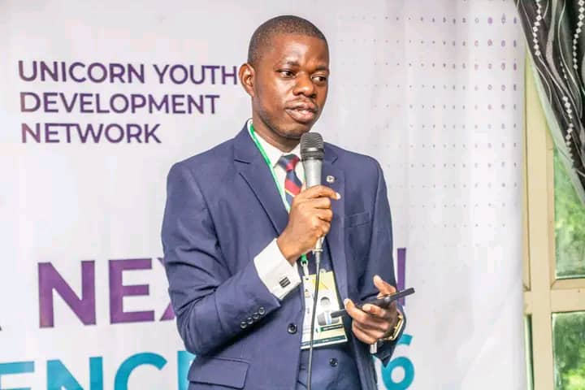
John Geraji Jacob convened Taraba NEXTGEN Conference 2026 through Unicorn Youth Development Network. His work centres on youth-focused leadership, community development, advocacy and grassroots mobilisation.
Apply for NEXTGEN 2027 →